Overview
Water is a relatively complex natural phenomenon to achieve in real-time rendering, due to its many little contributing factors both visually and physically.
Basic Information for Water Shader:
- Surface is no longer using a procedural bump map, but instead, FFT noise based gradient/normal/height map with multiple frequencies/scales for ambient waves.
- User interaction with the surface will generate waves propagation.
- For high specs, we keep using vertex displacement, with added support for water interaction.
- Cheap approximation for sun shadows.
- Separate water fog passes have been merged into water surface rendering for optimal performance.
- One final small step forward was unifying water rendering, this means ocean, water volumes and rivers can go through same final rendering path - which will be easier for artists/designers to use since both are setup in the same way.
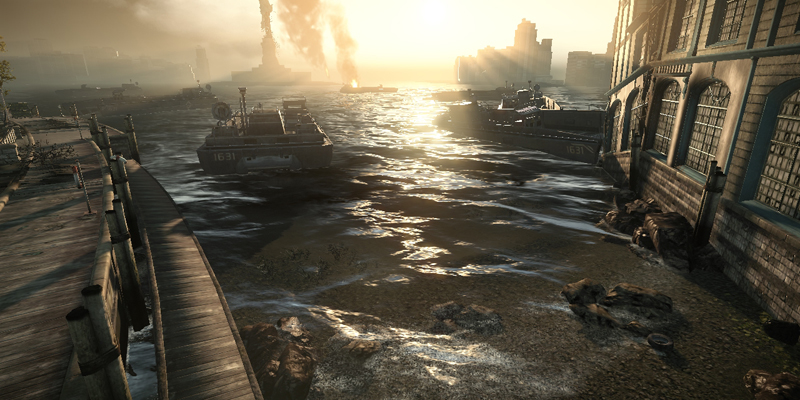 |
Water rendering in action for high spec. Vertex displacement gives an extra visual kick |
|---|
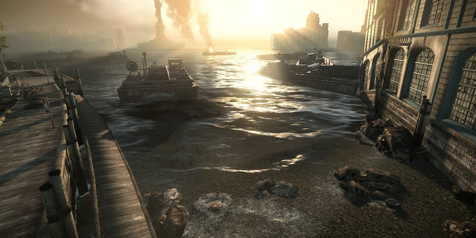 |
Water rendering in action for consoles specs, using parallax approximation |
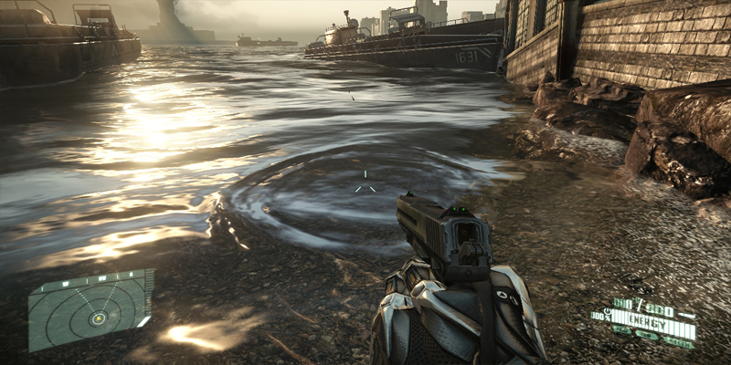 |
Dynamic water interaction |
Some Water Properties
Notice where does main water color/look comes from: It's all coming from reflection on water top surface and how light interacts with water molecules/suspended particles (we call it "underwater fog" on CRYENGINE).
This means never try to achieve water color/look just with reflection, it's a sum of both.
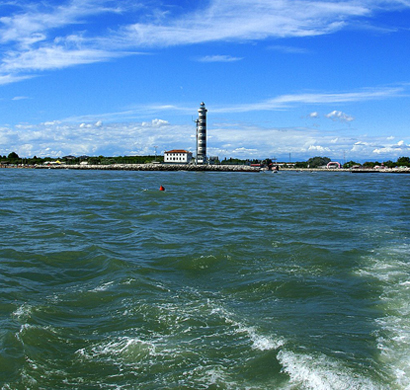 | 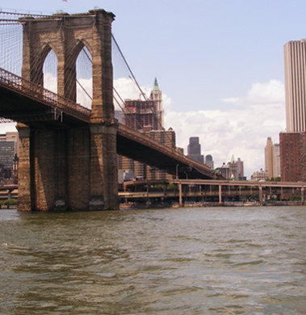 |
Notice on both images bright highlights comes from the sky reflection, | Notice second look contributor: the "water fog", greenish on |
Guidelines for Setting Up Water
- Default parameters were carefully crafted to give an initial nice default look, but every level is a different level, so some fine tuning will always be required.
- Never, never try to achieve water color/look just with reflection, it's a sum of both that gives you a final correct look.
- Since one of your 2 main look contributors is reflections, if you have a Dull looking environment, you'll get dull/boring looking reflections. Always strive for interesting sky look, with nice skyline gradient and bright spots (last one particularly important for night scenes).
- Use foam carefully, this is a cheap approximation - don't overdo it, else might look out of place.
- Ocean reflection draw distance is tied to the terrain detail texture draw distance.
- When setting up water materials for an ocean, ensure water volume option is not checked.
- When setting up water materials for water volumes or rivers, ensure water volume option is checked.
Shader Params
Shader Params | Description | Shader Gen Option |
|---|---|---|
Crest Foam Amount | Set amount of foam that will appear at the crest of a wave (FFT displaced ocean only - Very High Spec). Foam shader generation parameter must be enabled first. | Foam |
Detail Normals Scale | Allows you to set normal scale. | Default |
Detail Tilling | Set waves detail bump tilling. | Default |
Fake camera speed | Causes the surface of the water to scroll in world-space. This gives the impression that a stationary object in the ocean is actually moving through it. | Fake camera movement |
Foam amount | Multiplier for foam. | Foam |
Foam soft intersection | Very similar to a soft intersection, but blending foam on intersection regions. | Foam |
Foam tilling | Tiling amount for foam. | Foam |
Fresnel Gloss | The gloss of the Fresnel effect. See Illum Shader for more information. For water, a good value is 0.05 (default value). | Default |
Gradient scale | Use for giving a more choppy look to waves (scale for parallax mapping for xy plane). | Default |
Height scale | Set scale for heightmap used for parallax mapping approximation. | Default |
Normals scale | Overall scale for normals. | Default |
Rain ripples tilling | Sets tiling for rain ripples. | Default |
Reflection bump scale | Reflection map bump scale. | Default |
Reflection scale | Real-time reflection map multiplier / or cube map multiplier for water volumes. | Default |
Refraction bump scale | Refraction map bump scale. | Default |
Ripples normals scale | Sets dynamic ripples normals scale. | Default |
Soft intersection factor | Set water soft intersection with geometry. | Default |
SSS scale | Sets the SSS scale. | Default |
Tilling | Set waves bump tilling. | Default |
Shader Generation Parameters
The following Shader Generation Paramaters are available for the Water Shader:
| Parameter | Description |
|---|---|
| Sunshine | Enables sunshine effects on the ocean surface. |
| Fake Camera Movement | Enables fake camera movement for scenes in the ocean. |
| No Refraction Bump | Disables refraction bump. |
| Foam | Enables foam on the ocean surface. |
Using the Water Shader
Every parameter is straightforward to use, and what the name says is basically what it does. In case of setting up water volumes, simply increase tilling scale.
Some examples of look:
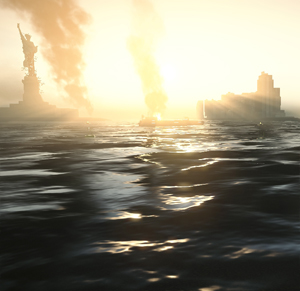 |
| 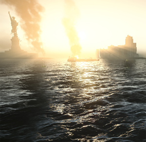 |
Tiling - too little | Tiling - just right | Tiling - way too much (kills look) |
|---|---|---|
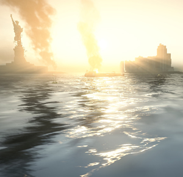 |
| 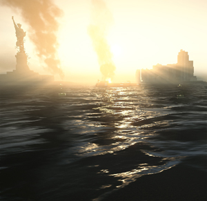 |
Reflection setup (bias 1) | Reflection setup (default bias 0.05) | Reflection setup (reflection scale) |
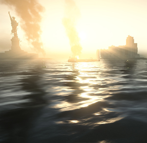 | 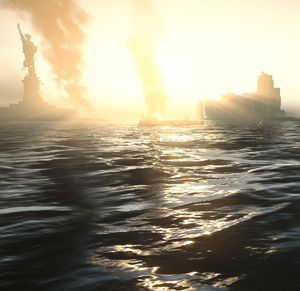 | 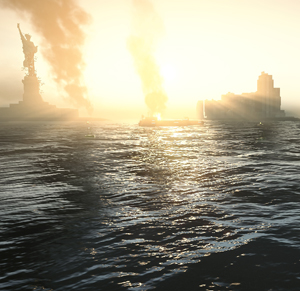 |
Normals setup (low normal scale) | Normals setup (normal scale) | Normals setup (inc. detail normals scale) |


Performance guidelines
Only enable options you really want to use:
- Do you need sun reflection? If not, disable.
- Do you need foam? If not, disable.
- Set caustics multiplier to 0 to disable caustics rendering when not needed.
Performance related CVars:
e_WaterOcean e_WaterVolumes r_WaterReflectionsQuality r_WaterUpdateFactor
Activates drawing of ocean.
1: use usual rendering path
2: use fast rendering path with merged fog
Activates drawing of water volumes
1: use usual rendering path
2: use fast rendering path with merged fog
DUMPTODISK
Activates water reflections quality setting.
Usage: r_WaterReflectionsQuality [0/1/2/3]
Default is 0 (terrain only), 1 (terrain + particles), 2 (terrain + particles + brushes), 3 (everything)
DUMPTODISK
Distance factor for water reflected texture updating.
Usage: r_WaterUpdateFactor 0.01
Default is 0.01. 0 means update every frame